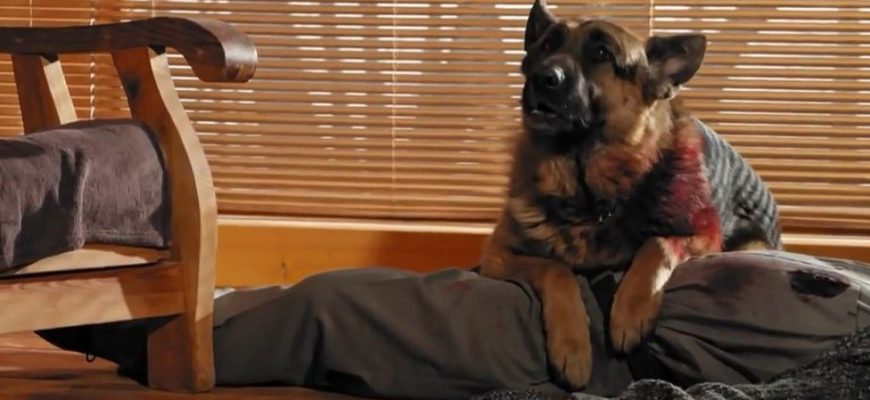

Никита Панфилов Владиславович
Известен в сериале «Пёс» как: Максим Максимов.
О Премьере Сезонов Сериала «Пёс»:
Премьера первого сезона состоялась на украинском телеканале ICTV 1 сентября 2015 года. В России показ
первого сезона прошёл на телеканале НТВ с 16 по 24 мая 2016 года. Премьера второго сезона телесериала
прошла в эфире ICTV с 19 по 29 сентября 2016 года. Было показано
20 новых серий. Оставшиеся 4 серии были показаны в эфире ICTV 26 мая 2017 года. В России второй сезон
транслировался на НТВ с 27 февраля по 10 марта 2017 года. В эфир вышло 48 новых серий.
Премьера первой части третьего сезона (12 серий) прошла на телеканале ICTV со 2 по 19 октября 2017
года. В России третий сезон транслировался на НТВ со 2 по 17 октября 2017 года. Третий сезон был показан
как продолжение второго. В эфир вышло 20 новых серии. 6 ноября 2017 года на НТВ состоялся премьерный
показ трёх новых серий. 31 декабря 2017 года на НТВ
была показана финальная серия третьего сезона. Премьера второй части третьего сезона (12 серий)
состоялась на телеканале ICTV 2 апреля 2018 года. Показ третьего сезона на ICTV был завершён 19 апреля
2018 года.
Премьера четвёртого сезона прошла в эфире телеканала ICTV с 22 октября по 22 ноября 2018 года. В
России премьера четвёртого сезона прошла на телеканале НТВ с 28 ноября по 13 декабря 2018 года.
Четвёртый сезон был показан как третий. Также были сняты две специальные, новогодние серии, показ
которых состоялся в канун Нового 2019 года. Премьера пятого сезона состоялась на телеканале ICTV с 15
октября 2019 года по 8 ноября 2020 года. В
России премьера пятого сезона состоялась на телеканале НТВ с 9 по 31 декабря 2019 года. Пятый сезон
сериала был показан как четвёртый.
Премьера первого блока шестого сезона состоялась на телеканале ICTV с 7 декабря 2020 года по 15 апреля
2021 года. В России премьера первого блока шестого сезона состоялась на телеканале НТВ с 14 по 31
декабря 2020 года. Начало шестого сезона было показано как пятый. В России премьера второго блока
шестого сезона состоялась на телеканале НТВ 12 июня 2021 года. Две
новых серии были показаны как начало шестого сезона. Показ остальных серий транслировался на НТВ с 30
августа по 9 сентября 2021 года, а на канале ICTV эти серии показывали с 25 октября 2021 года. С 3
августа 2021 года на канале ICTV телесериал транслируется в украинском дубляже.
О Сюжете Сериала:
Главный герой телесериала — Максим Максимов. Раньше работал в полиции, но за
несговорчивость с коррумпированным начальством и стремление к справедливому расследованию был уволен.
Бывшие сотрудники говорят о Максимове как об опытном, честном и мужественном полицейском, но большом
любителе алкоголя. Под этим предлогом Макса и уволили из полиции.
Любимая жена Лена, уставшая смотреть на его вечные пьянки, ушла к лучшему другу Максимова.
Её новый муж Алексей Леонидов не такой отчаянный и сильный, но внимательный и заботливый.
Оставшись один, без работы, жены и друзей, Макс стал пить ещё больше.
В первой серии телесериала «Пёс» в магазин врывается шайка бандитов с оружием. Максимов
расправляется с
бандитами.
По вызову с места преступления приезжает наряд полиции под руководством капитана полиции Игоря
Гнездилова. Игорь Гнездилов — глупый и трусливый полицейский по кличке "Гнездо", получивший своё место в полиции
только благодаря дяде-генералу. Узнав, что банду преступников возглавлял прокурорский сын, Гнездилов решает «замять» дело. Не
обращает
внимание на оружие, важные улики и следы преступления.

Затем жестоко убивают учителя и бывшего тестя Максимова — бывшего полицейского Николая Жарова. Получив предсмертную СМС-ку, Макс приезжает в дом тестя. В доме его встречает раненая собака Жарова.
Макс осматривает помещение и понимает, что совершено убийство.
Однако приехавшие полицейские настаивают на версии самоубийства и закрывают дело. Гнездилов даёт
команду пристрелить пса.
Максимов избивает Гнездилова и забирает пса в свой дом. Залечивает его раны, даёт новую кличку Пёс и
начинает расследование убийства самостоятельно. Пёс активно помогает Максу в поисках убийцы.
Пёс узнаёт бандита на похоронах у своего бывшего хозяина. Оценив способности служебного пса, Максу
предлагают работать внештатным сотрудником в полиции. Макс в итоге бросает пить.